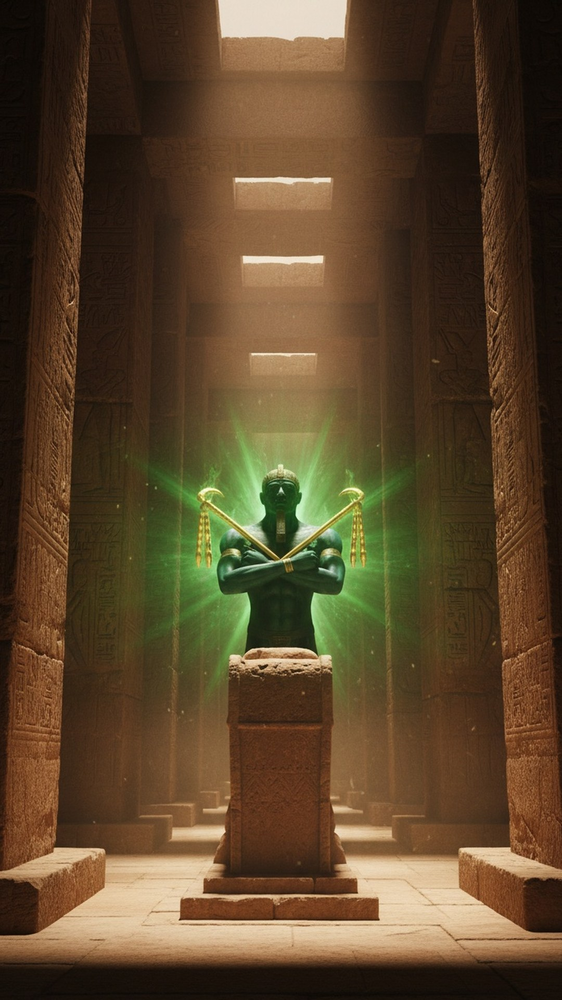

Egypt worshipped a resurrected god more than two thousand years before Jesus, and his titles will sound familiar: Lord of Lords. King of Kings. The Good Shepherd. The Resurrection and the Life. His name was Osiris, and his story is not preserved in some late, contaminated source. It is carved into the oldest religious writings in human history.
This is part 2 of THE BLUEPRINT, our 23-part investigation into the figures who carried pieces of the Jesus story before the story was told. Osiris is where the timeline starts, because nobody's timeline goes back further.

The oldest resurrection on record
The Pyramid Texts were carved into the burial chambers of the pharaohs of the Fifth and Sixth Dynasties, beginning around 2400 BC. They are the oldest substantial body of religious writing on earth, and the Osiris story runs through them. Osiris, the good king, is murdered by his brother Set. His body is cut into fourteen pieces and scattered the length of Egypt. His wife Isis searches out every piece, reassembles him, and Osiris rises, not to walk the earth again, but to rule the dead as their judge.
This is not an obscure myth recovered by modern excavators. It was the central story of Egyptian religion for three thousand years, longer than Christianity has currently existed.
I am Osiris
Around 1550 BC the Book of the Dead formalized what the resurrection of Osiris meant for ordinary believers. The righteous deceased, standing in the hall of judgment, claims eternal life with a three-word formula: I am Osiris. Identification with the dying and rising god was the mechanism of immortality. You did not merely worship Osiris. You became him in death, and his resurrection became yours.
The Book of the Dead said I am Osiris fifteen hundred years before Paul wrote I am crucified with Christ.
Compare Galatians 2:20, written around 55 AD: I am crucified with Christ, nevertheless I live. Union with the dying god as the path to eternal life is the exact theological architecture, and the Egyptian version had already been in liturgical use for a millennium and a half.
The rising, painted on a wall
At Abydos, the great cult center of Osiris, the temple of Seti I preserves reliefs from around 1290 BC showing the moment itself: Osiris rising from his funeral bier, attended by Isis. His skin is painted green, the Egyptian color of vegetation and rebirth. Pilgrims travelled to Abydos for centuries to reenact the passion of Osiris in an annual mystery play, complete with ritual mourning, a procession, and the god's triumphant restoration. Death, mourning, rising, celebration, on a fixed sacred calendar. If that sequence sounds like Holy Week, note which one came first, and by how much.
The honest difference
This series only works if we report what the sources say, including where the parallel breaks. So here it is: Osiris never returns to earthly life. He rules the world below as judge of the dead. Jesus, in the Gospels, returns bodily and walks out of the tomb into the world. Egyptologists are right to flag that difference, and we will not paper over it.
But look at what remains. A murdered god. A resurrection. The titles King of Kings and Good Shepherd. Eternal life granted through union with the risen one. A judgment of the dead. All of it carved in stone two millennia before Bethlehem, in the civilization that sat next door to Judea for the whole of its history, the same Egypt where, per Matthew, the holy family fled with the infant Jesus.
The question is not whether the Osiris cult existed first. The stones settle that. The question is whether a first-century Mediterranean world soaked in Osiris theology could tell the story of a murdered and risen redeemer without borrowing the vocabulary the region had used for two thousand years.
Who taught the Nile valley about resurrection first? Follow THE BLUEPRINT as the investigation continues, part by part, figure by figure.
This is Part 2 of 23 in THE BLUEPRINT, an investigation into the pre-Christian figures who carried the pieces of the Jesus story. See every part of the series here.
Before you go
7 books the Vatican doesn't want you reading. Free PDF — the texts they cut, with sources. Joined by 140+ Inner Circle members.
No spam. Unsubscribe anytime.
Go deeper
The Hidden Canon, Vol. I — Enoch. Jubilees. Thomas. Mary. Judas. 90 pages, 14 chapters, every receipt cited. The books your Bible quietly removed.
Read the Canon →Books that informed this investigation
As an Amazon Associate, Hidden Epoch earns from qualifying purchases. Cost to you: nothing.
Research safely
The VPN we use to research without being tracked. First 3 months free.
Get NordVPN →